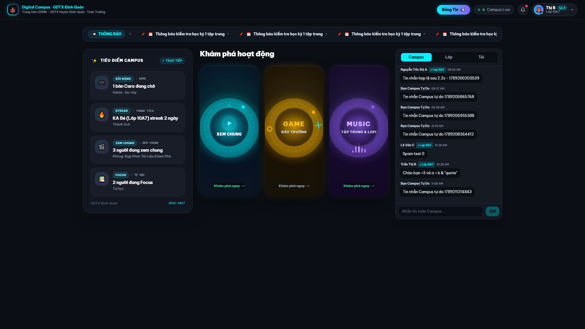
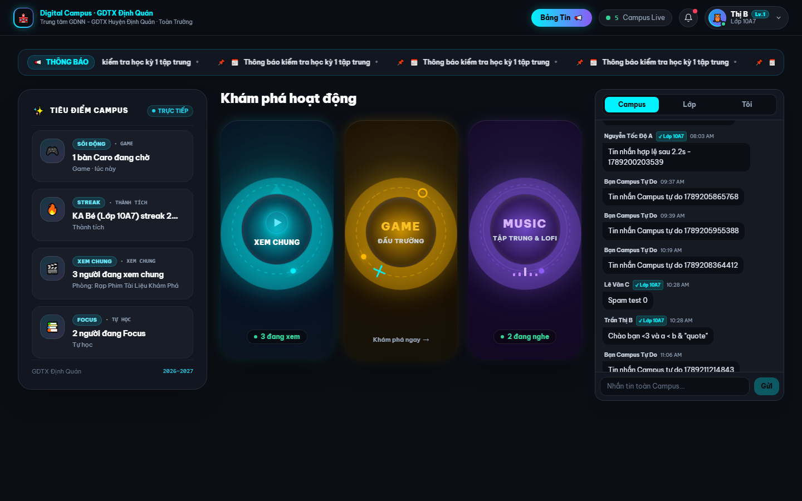
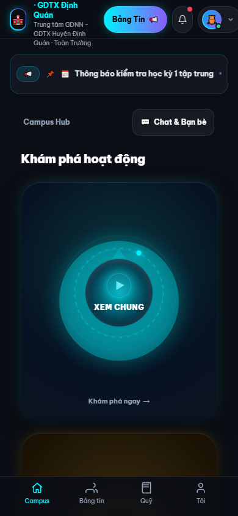
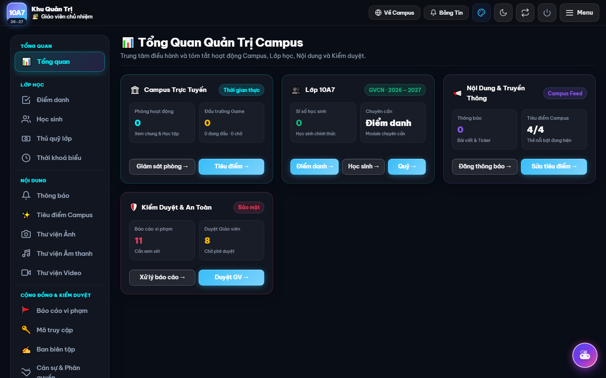
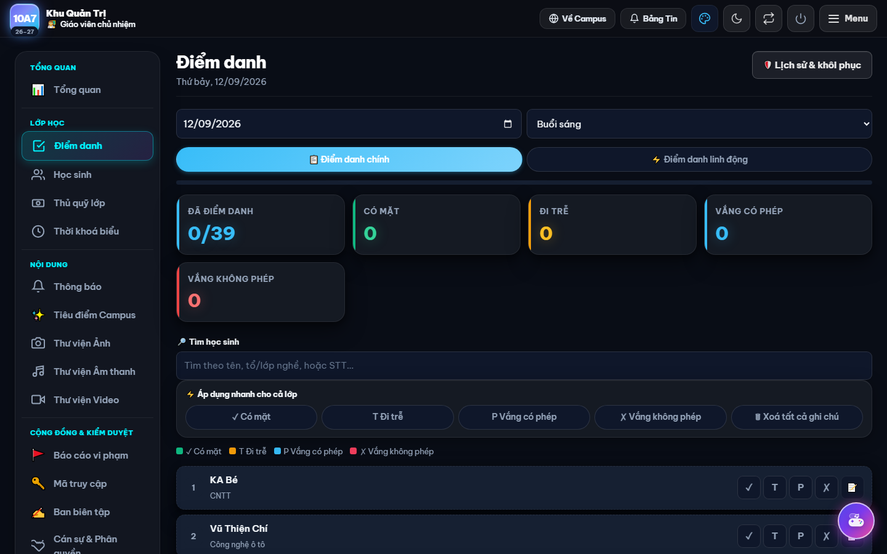

1. Campus Home ở độ phân giải 1920×1080 (3 Portal không viền + Tiêu điểm chuẩn tỉ lệ)

• Ba cổng hoạt động Xem chung (Cyan), Game (Amber), Music (Violet) chiếm vị trí tiêu điểm chính.
• Chữ lồng trong visual, orb trung tâm có hiệu ứng hạt và quét radial, không viền chữ nhật 1px thô.
• Tiêu điểm Campus đạt chiều cao ~540px khớp với khu vực hoạt động, loại bỏ khoảng trắng thừa.
2. Campus Home ở độ phân giải 1440×900 (Desktop tiêu chuẩn)

• Bố cục 3 cột tái cân bằng hoàn hảo (Tiêu điểm ~300px, Vùng hoạt động ~680px, Chat ~340px).
• Header hiển thị đúng duy nhất 1 nút Quản trị [🏛️ Quản trị] trỏ vào /giao-vien/. Nút phụ Admin Center ở ticker đã bị dỡ bỏ.
3. Campus Mobile 390×844 (Trải nghiệm chạm mượt mà)

• Ba cổng hoạt động sắp xếp chuẩn tỉ lệ dọc, đảm bảo touch target > 44px, không tràn ngang trang.
4. Khu Quản Trị Mặc Định Mới: Tổng Quan Sạch Sẽ (Region 4 Điểm Danh Đã Được Chuyển Vào Module Riêng)

• Khi giáo viên vào /giao-vien/, mặc định mở #/tong-quan với 4 khối quản trị súc tích (Campus, Lớp học, Nội dung, Kiểm duyệt).
• Màn hình điểm danh nặng nề (Region 4) không còn chiếm chỗ trang đích đầu tiên.
5. Module Điểm Danh Độc Lập (#/diem-danh) Vẫn Hoạt Động 100%

• Khi giáo viên bấm chọn "Điểm danh", quy trình điểm danh đầy đủ mở ra ngay lập tức, không làm gián đoạn nghiệp vụ.